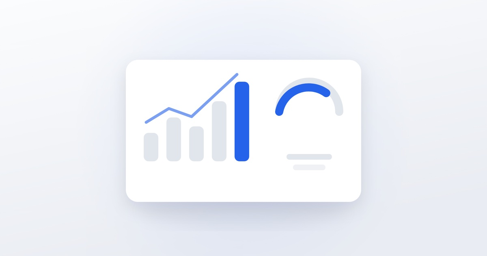

Как считать эффективность SMM: метрики, которые важны

Самый частый разговор с клиентом через два месяца работы: «охваты выросли, а что мне с этого?» Проблема в том, что считают не то. Разберём, какие показатели связаны с деньгами.
Метрики, которые почти ничего не значат
- Количество подписчиков. Легко накручивается, слабо связано с продажами. Тысяча случайных подписчиков хуже сотни целевых.
- Лайки. Показывают, что публикация понравилась, но не что человек готов платить.
- Общий охват. Важен только в разрезе: кто это увидел и что сделал дальше.
Эти цифры не бесполезны, но как единственный отчёт — бессмысленны.
Метрики контента
- Досматриваемость видео — процент тех, кто досмотрел до конца. Главный показатель для коротких роликов.
- Сохранения — человек счёл материал полезным настолько, что вернётся. Сильный сигнал для алгоритма.
- Пересылки — самый дорогой вид реакции: контент рекомендуют лично.
- Доля новых пользователей в охвате — растёт ли аудитория или вы крутитесь среди тех же людей.
Метрики движения к заявке
- Переходы в профиль из ленты и рекомендаций.
- Клики по ссылке в шапке.
- Новые диалоги — сколько людей написали впервые.
- Конверсия из перехода в диалог — если переходов много, а сообщений нет, проблема в упаковке профиля.
Деньги
Три показателя, которые нужны собственнику:
- Стоимость обращения = все затраты на канал ÷ количество обращений.
- Стоимость клиента = затраты ÷ количество оплативших.
- Окупаемость = выручка с канала ÷ затраты на канал.
Чтобы их считать, нужно фиксировать источник каждой заявки. Минимально — спрашивать «откуда вы о нас узнали» и записывать ответ. Лучше — метки на ссылках и учёт в таблице или CRM.
С какой периодичностью смотреть
- Еженедельно — контентные метрики, чтобы корректировать план.
- Ежемесячно — обращения и их стоимость.
- Раз в квартал — окупаемость и вклад канала в выручку.
Оценивать SMM по итогам одной недели бессмысленно: контент накапливает эффект.
Как выглядит нормальный отчёт
Не список скриншотов из статистики, а таблица: что делали, что получили, что меняем в следующем месяце. Если в отчёте нет строки про заявки и нет вывода — это отчёт о занятости, а не о результате.
Реалистичные ожидания
Первые заявки из органического контента появляются обычно на второй-третий месяц. Реклама даёт обращения быстрее — в первые недели, но требует бюджета на тесты. Если подрядчик обещает поток клиентов с первой недели без рекламы, стоит уточнить, за счёт чего.
Мы ведём отчётность по стоимости обращения и раз в месяц показываем, что сработало и что меняем. Напишите, если хотите видеть цифры, а не охваты.